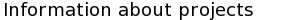

COURSEWORK 3
To visit the Goldsmiths website click here.
Below is a list of all projects. Projects with a red background have been cancelled, projects with a black background are in progress and projects with a blue background are completed.
| Project name | Project lead |
|---|---|
| Web 1 | Smith, John |
| Web 2 | Doe, John |
| Web 3 | Smith, John |
| Web 4 | Doe, Jane |